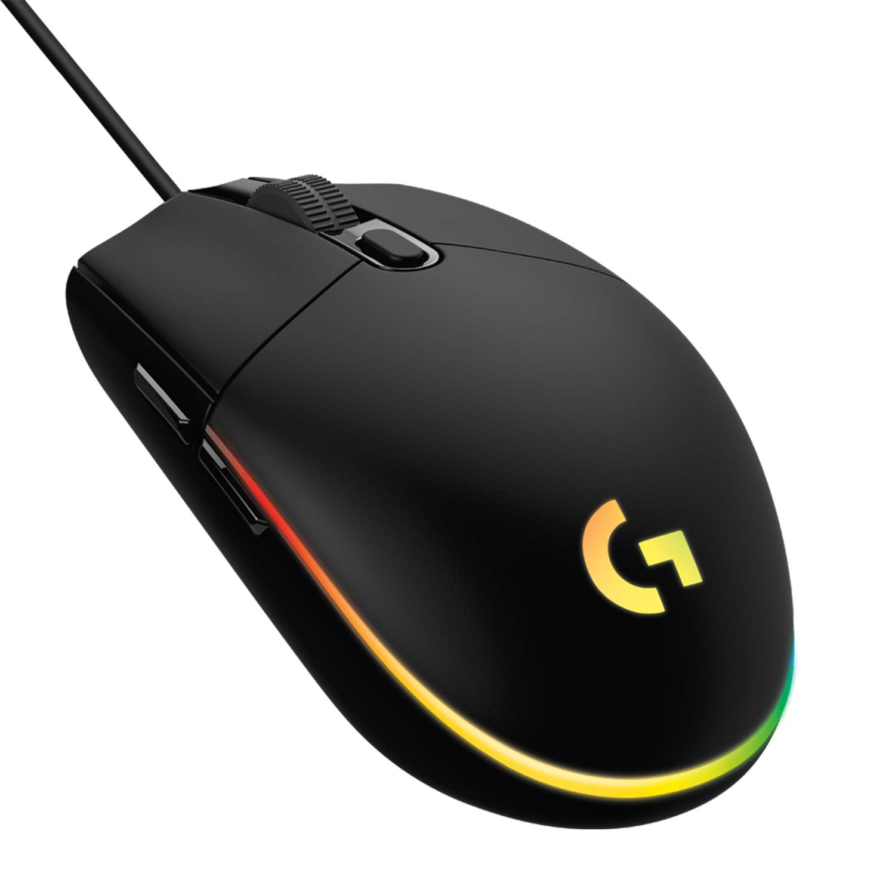

Logitech G203 Lightsync!

Logitech G203 Lightsync:
O Logitech G203 Lightsync é um mouse versátil e equilibrado, com pegada confortável e desempenho consistente. DPI ajustável e RGB estiloso criam um setup funcional e com visual bacana — bom pra quem joga ou trabalha bastante.
R$: 159,99
Vídeo de Apresentação:
Visão Geral
O G203 Lightsync é aquele mouse versátil que serve para tudo: desde tarefas do dia a dia até jogos mais intensos. Ele agrada tanto quem busca precisão quanto quem valoriza conforto e estética. Com DPI ajustável e boa taxa de polling, os movimentos são fluidos e responsivos. A iluminação RGB é personalizável — ótimo pra quem curte deixar o setup com cara própria. Leve e com pegada agradável, encara longas horas de uso sem cansar as mãos.
Especificações Técnicas – Logitech G203 Lightsync
- Sensor: Óptico de alta precisão
- DPI: até ~8000 DPI (ou mais, dependendo da versão)
- Polling Rate: 1000 Hz
- Botões: 6 (programáveis via software)
- Iluminação: RGB LIGHTSYNC personalizável
- Conexão: Fio USB
- Formato: Ergonômico / simétrico — confortável para mãos médias
- Peso aproximado: ~85–90 g
- Uso indicado: jogos, estudos, programação, uso geral, setup estético
Outros dos nossos produtos:

Teclados
Teclados mecânicos, RGB, e muito mais!

Mouses
Mouses ergonômicos e precisos com design moderno.

Fones de Ouvido
Fones com cancelamento de ruído e áudio imersivo.